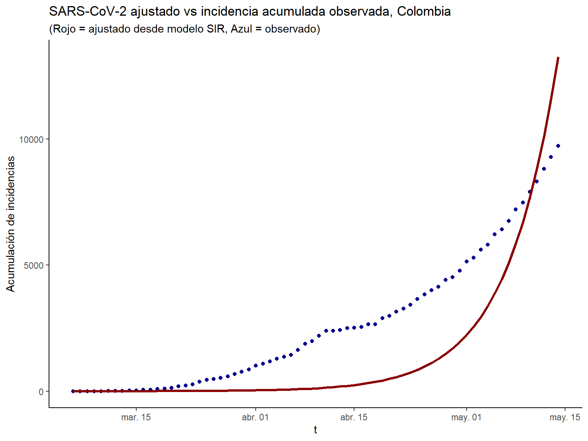
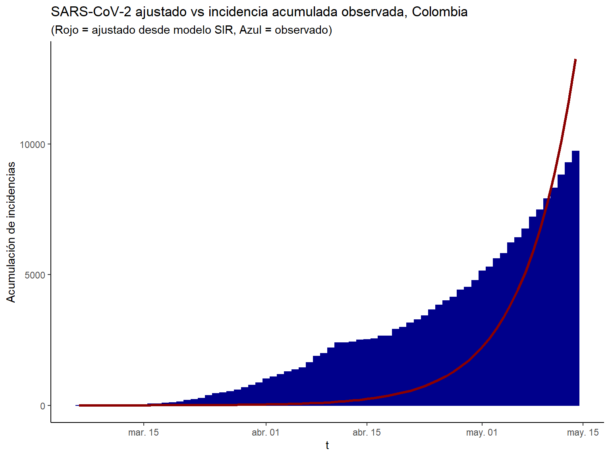
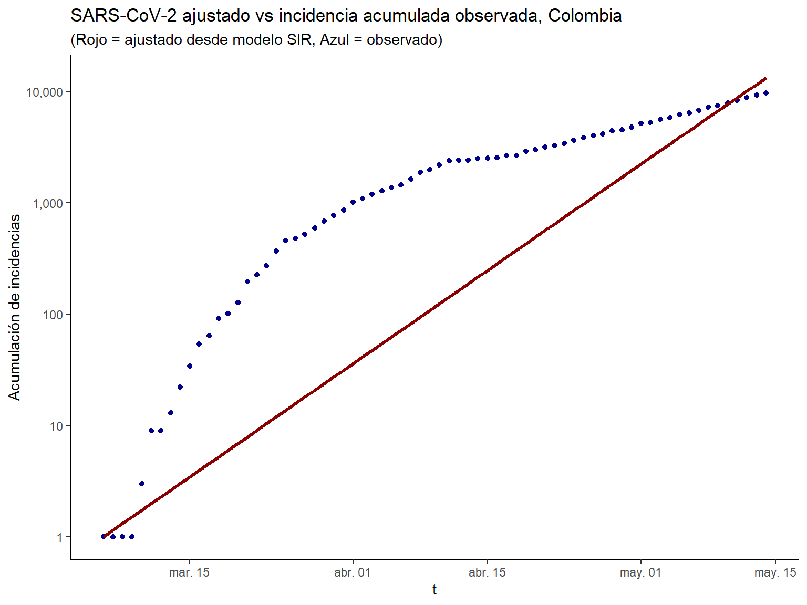
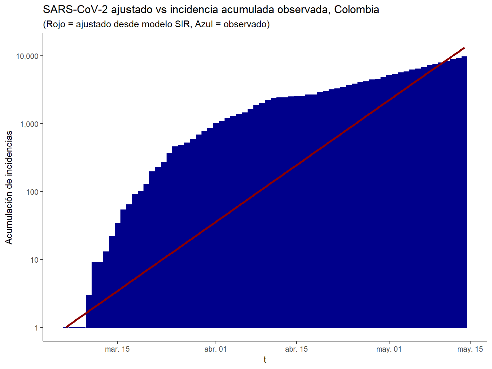
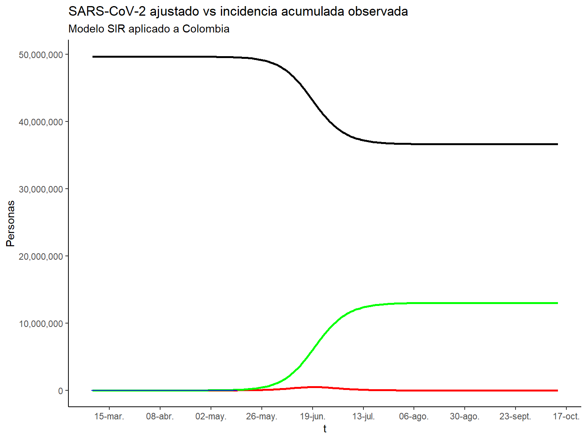
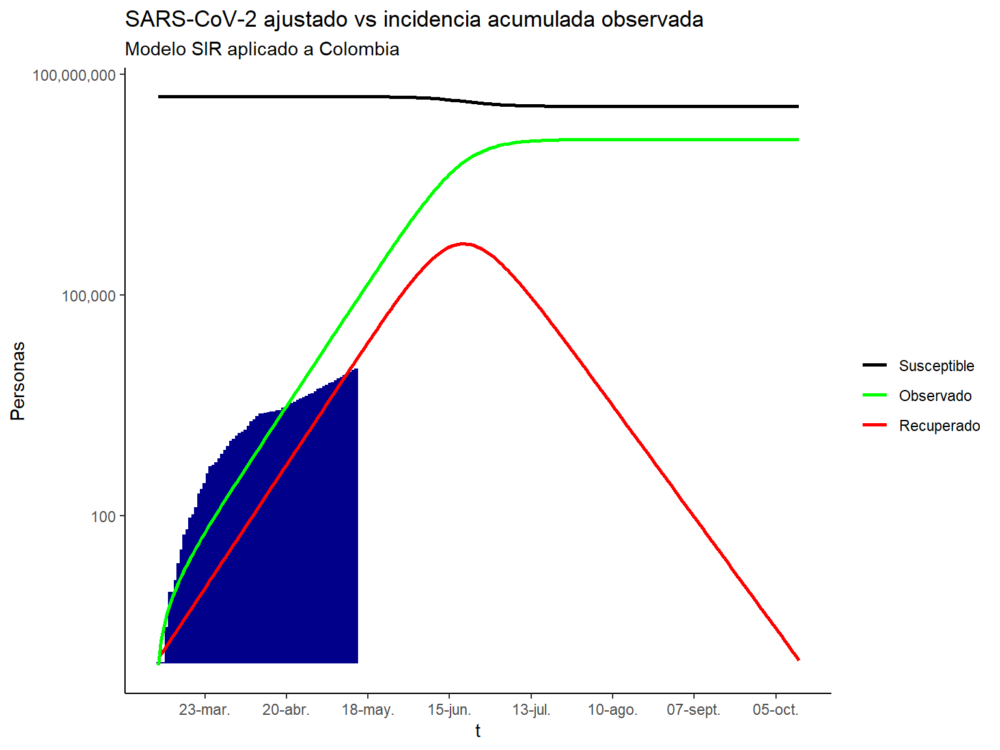
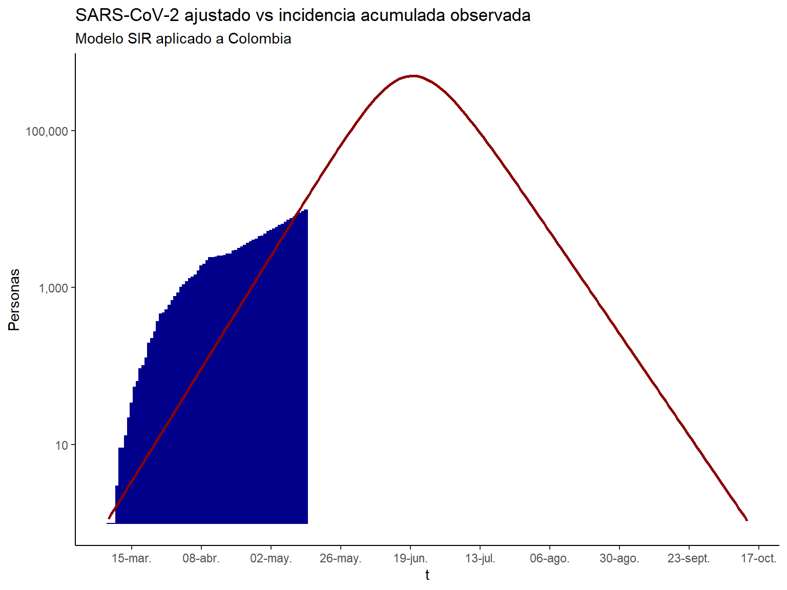

En diciembre de 2019 en la ciudad de Wuhan (China) se registraron varios casos de personas enfermas con una neumonía viral, que posteriormente sería atribuida a un nuevo coronavirus, el COVID-19 o SARS-CoV-2. Para enero 30 del 2020 la OMS (organización mundial de la salud) lo declaró un problema de salud pública internacional. En los siguientes meses el virus se propagó rápidamente por el continente asiático, luego por el continente europeo y finalmente alrededor del mundo. Para el 11 de marzo del 2020, la OMS reconoció al SARS-CoV-2 como una pandemia global.
Crear un modelo que permita entender la propagación del SARS-CoV-2, prediciendo la curva de infectados y su duración a lo largo del tiempo en Colombia.
Iniciando, es necesario indicar los supuestos que requiere la implementación de este modelo como de la mayoría, de los modelos epidemiológicos.
No hay inmunidad (natural o vacuna). Verdadero para los corona pero no para la influencia estacional. Sí la mitad de la comunidad es inmune, entonces, el tamaño final de la epidemia cambiaría dramáticamente.
Una Comunidad homogenea. No verdadero para los corona o ninguna enfermedad. Determinar que heterogeneidad es importante, depende de la aplicación (Existen muchas investigaciones en esta dirección). Algunos efectos son que entre 10% al 20% menos se infectan.
No hay cambios durante la epidemia. Previniendo medidas durante el brote podrían tener una gran diferencia en su resultado.
Modelo matemático Susceptible - Infeccioso - Recuperado (SIR) (Kermack y McKendrick 1927).
\(Susceptible\): Individuo que aún no a tenido la enfermedad, pero no es inmune a ella. Y por tanto, puede volverse infeccioso al tener contacto con un infectado.
\(Infeccioso\): Individuo que actualmente esta comprometida por la enfermedad y capas de transmitirla a otros.
\(Recuperado\): individuo infeccioso que ya no se ve afectado por la enfermedad y que ya no puede transmitirla. No puede producirse una reinfección, es decir, los individuos recuperados son inmunes a la enfermedad una vez la tuvieron.
Suponemos que al momento cero:
Todos los individuos son suceptibles excepto por \(m\) individuos, que son infecciosos en el momento cero.
Una vez infectado, se recupera o muere.
Matemáticamente por \(S(t)\) \(I(t)\) \(R(t)\) denota el número de susceptible, infeccioso y recuperado en la población en el tiempo \(t\).
Para todos los tiempos \(S(t) + I(t) + R(t) = N\).
En otras palabras, la población es cerrada y no varía en el tiempo.
De manera: \(S \rightarrow I\) y \(I \rightarrow R\).
\[ \frac{\partial S(t)}{\partial t} = -\beta \cdot S(t) \cdot I(t) \\ \]
\[ \frac{\partial I(t)}{\partial t} = -\beta \cdot S(t) \cdot I(t) - \gamma \cdot I(t)\\ \]
\[ \frac{\partial R(t)}{\partial t} = - \gamma \cdot I(t)\\ \]
De manera \(S \rightarrow I\)
\(\beta \cdot S(t) \cdot I(t)\)
Cada individuo tiene contactos a una velocidad \(\alpha\) para reunirse con otra persona especifica.
Una porción de \(p\) contactos resulta en una infección.
Entonces, \(\beta = \alpha \cdot p\) es la tasa a la cual existen contactos infecciosos.
Esto denota el movimiento de los individuos por cada categoría.
De manera \(S \rightarrow I\)
\(\beta \cdot S(t) \cdot I(t)\)
\[ \sum_{j = 1}^{I(t)} \cdot \beta \cdot S(t) = \beta \cdot I(t) \cdot S(t)\\ \]
Nota: Este es un termino no lineal que consta de \(I(t)\) y \(S(t)\).
Esto denota el movimiento de los individuos por cada categoría.
De manera \(I \rightarrow R\)
\(\gamma \cdot I(t)\).
Es decir, que podemos interpretar que entre más pequeño sea \(\gamma\) más individuos serán infectados y en consecuencia, ellos más podrán transmitir la enfermedad a otros.
Podemos resumir este sistema de la siguiente manera:
\[ S \longrightarrow I \longrightarrow R\\ \]
donde, \[ S \longrightarrow I := \beta \cdot S(t) \cdot I(t)\\ \] \[ I \longrightarrow R := \gamma \cdot I(t) \]
El \(R_0\) es definido:
“El número esperado de casos secundarios por caso primario en una población completamente susceptible”.
—(Diekmann, Heesterbeek, and Britton 2013).
Se calcula como:
\[ R_0 = N \cdot \frac{\beta}{\gamma}\\ \]
Para el caso del SARS-CoV-2, entendemos que por lo antrior que si \(R_0\) es el número promedio de individuos infectados por otro individuo. Sí el valor de \(R_0\) es alto, la probabilidad de pandemia es mayor.
El número de \(R_0\) también es usado para estimar el umbral inmune de individuos en una población o herd immune threshold (HIT por sus siglas en inglés):
Sí el número de individuos no inmune o susceptibles es igual a 1, indica que el estado esta equilibrado.
Sí el número de individuos infectados es contante.
Sí suponemos que la porción de personas es \(p\) podemos formular un estado de la siguiente manera:
\[ R_0(1-p) = 1 \rightarrow 1 -p = \frac{1}{R_0} \rightarrow p_c = 1 - \frac{1}{R_0} \]
Por lo tanto, \(p_c\) es el HIT para detener la propagación de la enfermedad.
\[ p_c = 1 - \frac{1}{R_0} \]
Es decir, que podemos vacunar una proporción de \(p_c\) para aumentar la inmunidad de la población y sus individuos.
Donde, se usará para resolver las derivadas del sistema de ecuaciones diferenciales ordinarias por medio del paquete deSolve (Soetaert, Petzoldt, and Setzer 2010).
La información de invdividuos infectados por poblaciones (paises o regiones) es extraida del paquete coronavirus (Rami Krispin, 2020).
Antes de ajustar el modelo SIR. Es expresar las derivadas del sistema de ecuaciones diferenciales ordinarias ODE como una función en R con su tiempo \(t\).
Si vemos este sistema de ecuaciones diferenciales ordinarias debemos:
Solucionar las derivadas del sistema de ecuaciones diferenciales ordinarias ODE.
Encontrar los valores óptimos para los parámetros desconocidos \(\beta\) y \(\gamma\).
Entonces:
La función ode() para ecuaciones diferenciales ordinarias del paquete de R deSolve facilita hacer la solución del sistema de ecuaciones.
Y para encontrar los valores óptimos de los parametros que se requieren estimar, se usa la función optim() consruida en la base de R.
En especial, se requiere resolver es minimizar la suma de la diferencia de los cuadrados entre \(I(t)\) que es el ritmo de individuos en el componente infeccioso \(I\) en el tiempo t y el correspondiente número de casos como el pronóstico del modelo \(\hat{I}(t)\). Esta medida es conocida como el residuo de la suma de cuadrados \(RSS\):
\[ RSS(\gamma) = \sum_t (I(t)- \hat{I}(t))^2 \]
data <- coronavirus %>%
filter(country == "Colombia") %>%
group_by(date, type) %>%
summarise(total = sum(cases, na.rm = TRUE)) %>%
pivot_wider(
names_from = type,
values_from = total
) %>%
arrange(date) %>%
ungroup() %>%
mutate(active = confirmed - death - recovered) %>%
mutate(
confirmed_cum = cumsum(confirmed),
death_cum = cumsum(death),
recovered_cum = cumsum(recovered),
active_cum = cumsum(active)
)## # A tibble: 6 x 5
## Fecha `Confirmados Ac~ `Muertes Acum.` `Recuperados Ac~
## <date> <int> <int> <int>
## 1 2020-05-09 10495 445 2569
## 2 2020-05-10 11063 463 2705
## 3 2020-05-11 11613 479 2825
## 4 2020-05-12 12272 493 2971
## 5 2020-05-13 12930 509 3133
## 6 2020-05-14 13610 525 3358
## # ... with 1 more variable: `Activos Acum.` <int>| Fecha | Confirmados Acum. | Muertes Acum. | Recuperados Acum. | Activos Acum. |
|---|---|---|---|---|
| 2020-04-25 | 5142 | 233 | 1067 | 3842 |
| 2020-04-26 | 5379 | 244 | 1133 | 4002 |
| 2020-04-27 | 5597 | 253 | 1210 | 4134 |
| 2020-04-28 | 5949 | 269 | 1268 | 4412 |
| 2020-04-29 | 6207 | 278 | 1411 | 4518 |
| 2020-04-30 | 6507 | 293 | 1439 | 4775 |
| 2020-05-01 | 7006 | 314 | 1551 | 5141 |
| 2020-05-02 | 7285 | 324 | 1666 | 5295 |
| 2020-05-03 | 7668 | 340 | 1722 | 5606 |
| 2020-05-04 | 7973 | 358 | 1807 | 5808 |
| 2020-05-05 | 8613 | 378 | 2013 | 6222 |
| 2020-05-06 | 8959 | 397 | 2148 | 6414 |
| 2020-05-07 | 9456 | 407 | 2300 | 6749 |
| 2020-05-08 | 10051 | 428 | 2424 | 7199 |
| 2020-05-09 | 10495 | 445 | 2569 | 7481 |
| 2020-05-10 | 11063 | 463 | 2705 | 7895 |
| 2020-05-11 | 11613 | 479 | 2825 | 8309 |
| 2020-05-12 | 12272 | 493 | 2971 | 8808 |
| 2020-05-13 | 12930 | 509 | 3133 | 9288 |
| 2020-05-14 | 13610 | 525 | 3358 | 9727 |
Ahora, se pondrá el número de acumulación de incidencias diarias para Colombia en un vector llamado Infected.
Nota: sir_start_date y sir_end_date representa \(t \in T\) donde, \(T\) es el conjunto de periodos, en este caso días. El inicio y final del conjunto, son respectivamente estas dos constantes.
Es necesario, en este momento especificar los valores iniciales para N, S, I y R.
\(S\) es la diferencia de la población y el número de individuos infectados para 2020-03-06 que representa el día inicial de incidencias de la enfermedad sobre los individuos de la población de Colombia.
\(I\) será entonces el número de individuos infecciosos para 2020-03-06.
\(R\) iniciará en 0.
Es necesario, en este momento especificar los valores iniciales para N, S, I y R.
Finalmente, nosotros podemos ajustar el modelamiento SIR a los datos de incidencias, encontrando los valores de \(\beta\) y \(\gamma\) que minimiza la suma de los residuos al cuadrado entre las incidencias o casos activos acumulados observados y las incidencias acumuladas pronósticadas por el modelamiento.
Es decir, ahora encontraremos los valores de \(\beta\) y \(\gamma\) que brindan el menor RSS, el cual, representa el mejor ajuste a los datos de la incidencia. Inicia con los valores 0.5 para cada parametro y se restringen en el intervalo de 0 a 1.0
Para validar la convergencia. Es ERROR: ABNORMAL_TERMINATION_IN_LNSRCH. Si la convergencia es confirmada, se puede examinar los valores ajsutados para \(\beta\) y \(\gamma\), si no se confirma, igualmente se evaluarán los resultados del modelamiento, pero es neceario resaltar el suceso de no convergencia.
Así mismo, tenemos que los parámetros que minimizan la suma de residuos al cuadrado y que, por tanto, son los valores de mejor ajuste del modelamiento. \(\beta\) = 1 y \(\gamma\) = 0.86.
Recordemos que \(\beta\) controla la transición entre S e I (Susceptible e infeccioso) y \(\gamma\) controla la transición entre I y R (Infecioso y Recuperado).
Sin embargo, estos valores no son relevantes y son usados para obtener los números que se ajustan al comportamiento de los individuos del modelamiento SIR observados hasta el 2020-05-14 y comparar estos valores ajustados con los observados en los datos.
Para realizar el pronóstico inicaremos por obtener los valores ajustados del modelamiento SIR. Usaremos la funcion ode() y usaremos los parametros \(\beta\) y \(\gamma\) dentro definidos anteriormente para resolver el sistema de ecuaciones diferenciales ordinarias con el mejor ajuste encontrado.
Nota: \(t = \{1,2,3,\ldots,n\}\) donde \(n = 1-t_{max}\) ; \(t_{max} \in T\)
## time S I R Date Country cumulative_incident
## 1 1 49648684 1.0 0.00 2020-03-06 Colombia 1
## 2 2 49648683 1.1 0.92 2020-03-07 Colombia 1
## 3 3 49648682 1.3 1.99 2020-03-08 Colombia 1
## 4 4 49648680 1.5 3.20 2020-03-09 Colombia 1
## 5 5 49648679 1.7 4.60 2020-03-10 Colombia 3
## 6 6 49648677 2.0 6.20 2020-03-11 Colombia 9
## 7 7 49648675 2.3 8.05 2020-03-12 Colombia 9## time S I R Date Country cumulative_incident
## 64 64 49606139 5847 36699 2020-05-08 Colombia 7199
## 65 65 49599879 6704 42101 2020-05-09 Colombia 7481
## 66 66 49592702 7687 48296 2020-05-10 Colombia 7895
## 67 67 49584476 8812 55398 2020-05-11 Colombia 8309
## 68 68 49575048 10099 63538 2020-05-12 Colombia 8808
## 69 69 49564246 11573 72867 2020-05-13 Colombia 9288
## 70 70 49551872 13258 83555 2020-05-14 Colombia 9727

Para a gráfica podemos ver que los parámetros no son los más ajustados, pero si observamos que pareven seguiruna tendencia entre los valores ajustados y los observados. Necesitaríamos de más datos para comprobar si existe convergencia en el largo plazo. La siguiente gráfica es similar a la anterior, excepto que el eje y es una metrica en una escala logarítmica.

El modelamiento SIR, parece presentar un ajuste para los datos de las incidencias observadas en Colombia. Así que ahora apoyandose en el modelo se calculará el \(R_0\) (número básico de reproducción). el número básico de reprodución nos indica el promedio de individuos susceptibles que fueron infectados por individuos infecciosos, es decir, el número básico de reproducción indica el cociente entre individuos saludables que pueden ser infectados por individuos enfermos.
Cuando \(R_0 > 1\) la enfermedad empieza a expandirse en una población, pero sí \(R_0 < 1\) no es así. Como se indico con anterioridad, entre mayor sea el valor de \(R_0\) más complicado será tener control de la epidemia y tiene más probabilidades de convertirse en pandemia.
Formalmente, se tiene:
\[ R_0 = \frac{\beta}{\gamma} \]
Se tiene entones que para Colombia el \(R_0\) = 1.16. Es decir, un \(R_0\) de 1.16 significa que en promedio en Colombia tenemos 1.16 individuos que son infectados por una persona infectada. De acuerdo con (Fine, Eames, and Heymann 2011) la proporción de individuos que debe ser inmune para prevenir un aumento del brote de la enfermedad o HIT (como se mencionó con anterioridad) debe ser:
\[ 1 - \frac{1}{R_0} \]
El número de básico de reproducción 1.16 es suficiente para calcular la porción de individuos de la población que tienen que se inmunes para detener el brote de la enfermedad es 13.78%. Con la población estimada en el modelamiento SIR para Colombia se tendrían a aproximadamente 6,840,400 individuos inmunes para detener el brote del SARS-CoV-2.
Traemos nuevamente los valores ajustados del modelamiento SIR. Como se observa a continuación:

Ahora, la misma gráfica con una transformación logarítmica para el eje y con el fin de aumentar la sencilles de lectura de la grádica.

Ahora, si únicamente queremos ver el pronóstico del modelamiento SIR y las incidencias acumuladas observadas, tenemos la siguinte gráfica:

Este tipo de modelamiento SIR, no cumple a cabalidad con todos los supuestos requeridos para la situación actual de la pandemia con el SARS-CoV-2. No obstante sirve como ejercicio para evaluar el alcance de la pandemia actual. También cabe indicar que existen estudios con mayor precisión basados en modelos con una mayor complejidad.
Podemos evienciar que de acuerdo al modelaiento del SIR, el pico de la pandemia se estima el 2020-06-20 y tendremos 494,339 casos infectados. Tendremos 98,868 casos severos. Se estiman 29,660 casos de necesidad de cuidados intensivos. Y finalmente, se estiman 22,245 muertes suponiendo una tasa de fatalidad del 4,5% . La pandemia según el modelamiento realizado con el modelo SIR terminará el 2020-10-13.